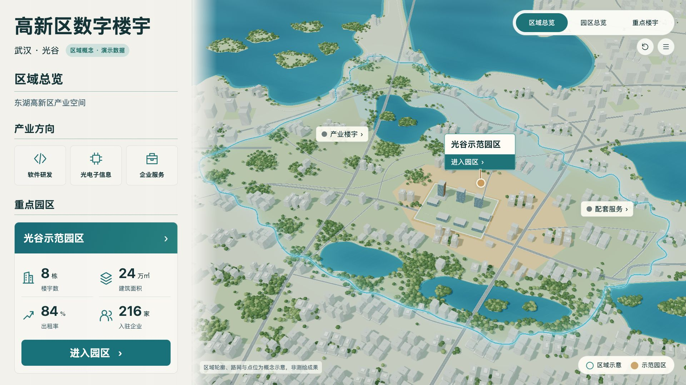
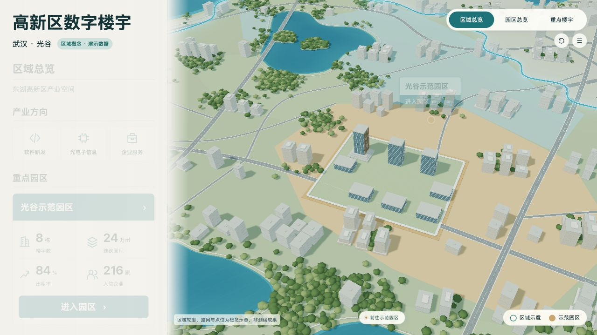
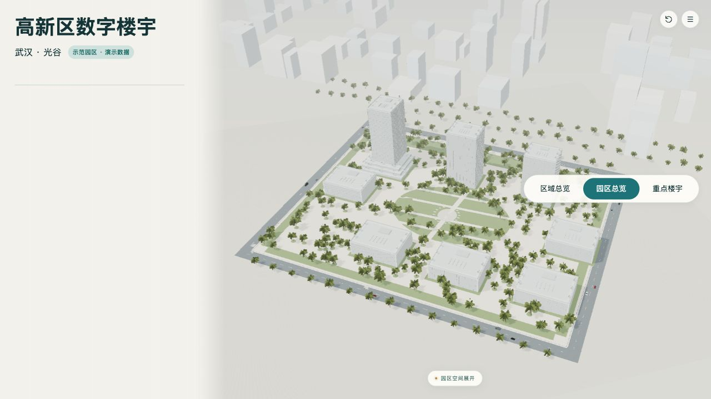
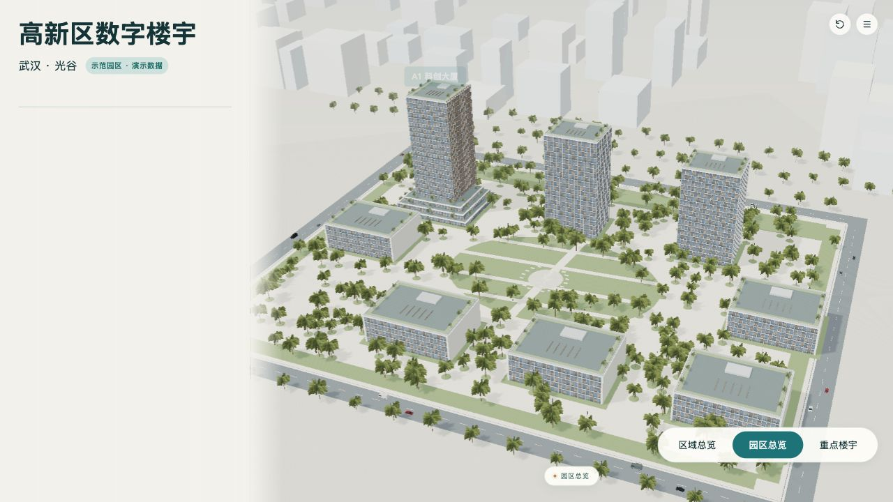
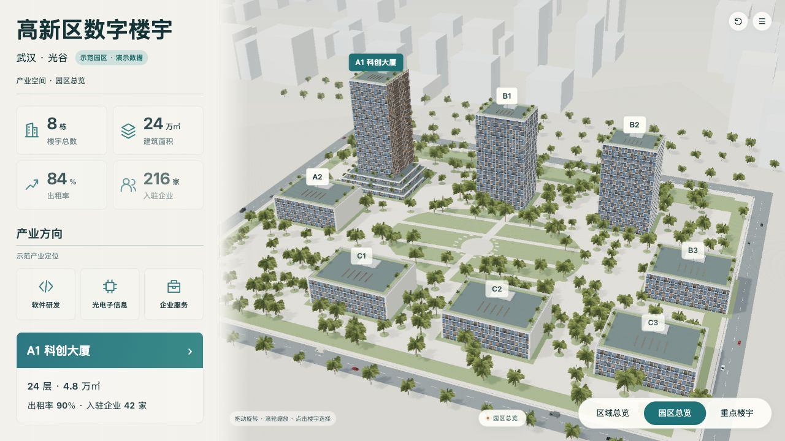
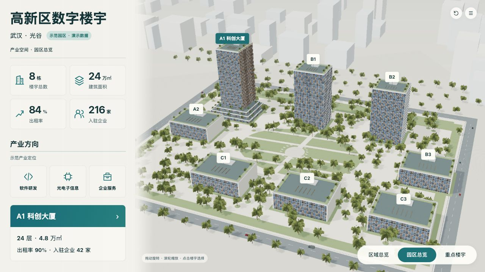
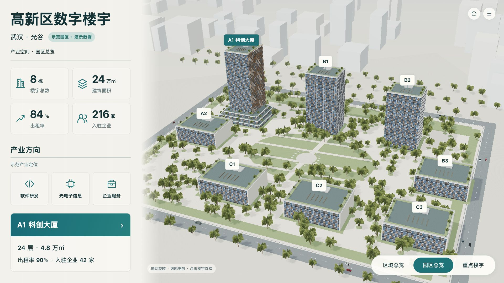
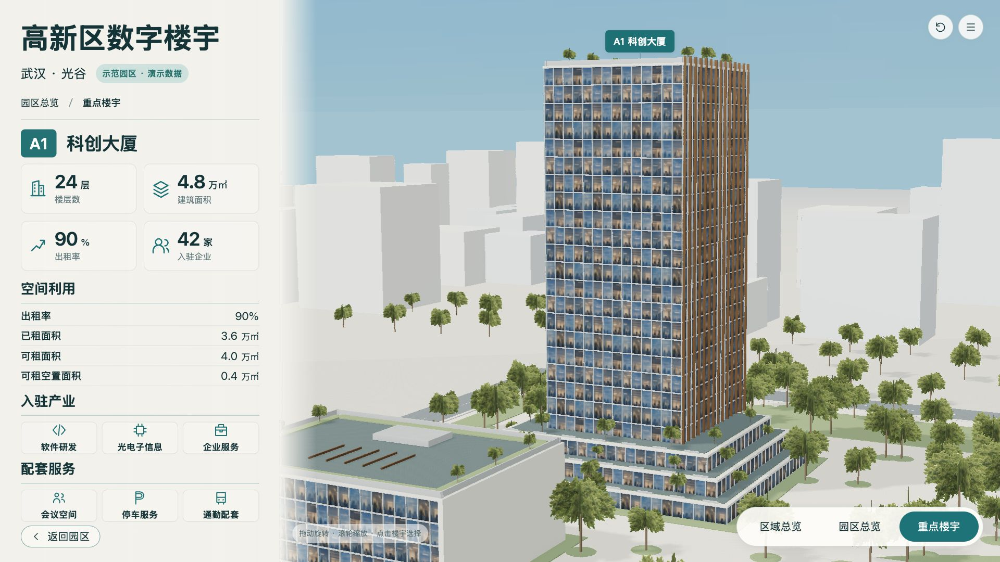
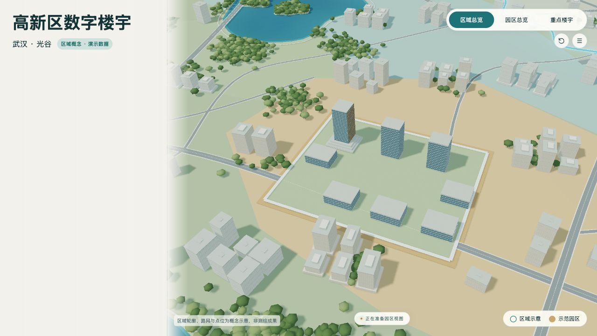
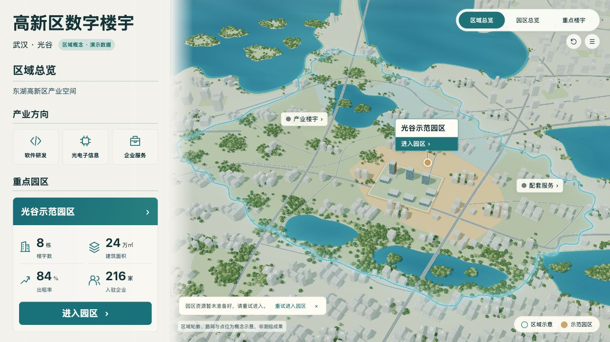

首次约2.8秒，再次约1.1秒，A1返回约0.6秒。GIF来自实际页面连续截图，1280×720，无裁切/拉伸；起始帧约0.10秒，末帧额外停留便于查看。实际交互在页面运行，不以GIF替代状态与资源复验。












交叠期间两层实际地面投影XY一致，Z因近远裁切面不同而不同。首次朝向未同步的失败样本保留在entry-frames-v22a。运行记录entry-runtime-v22.json；原城市写实差异R-05仍开放，不能把动效通过称为整屏视觉批准。